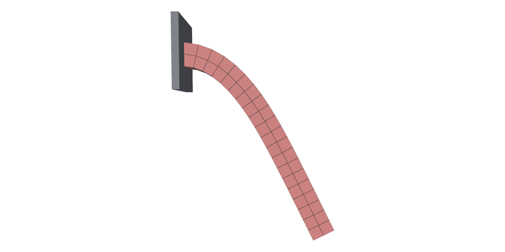
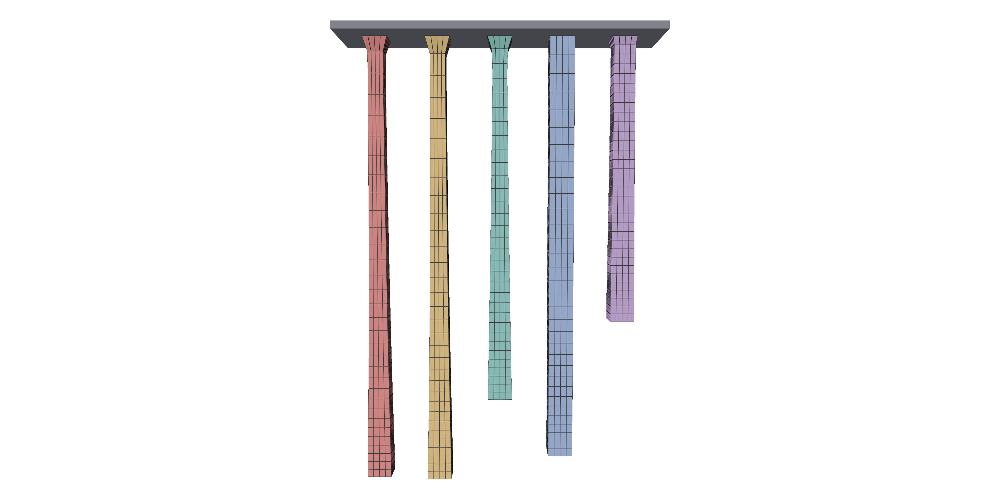
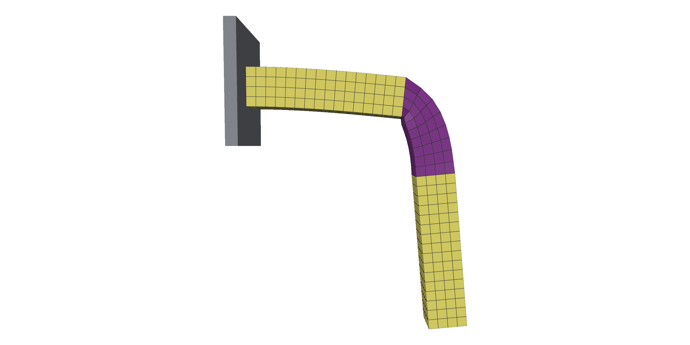
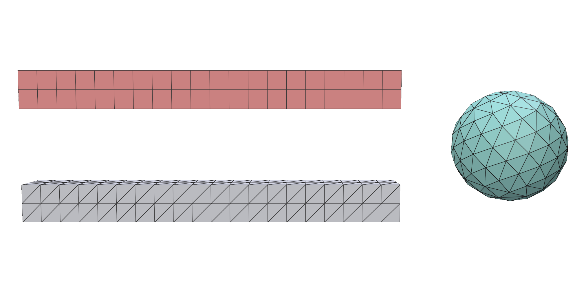
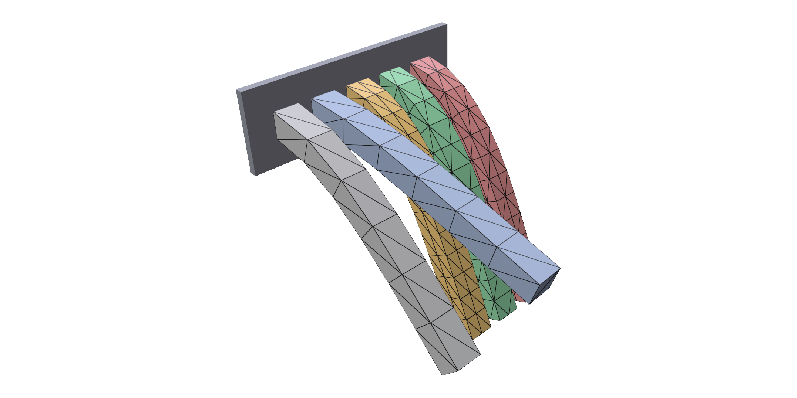
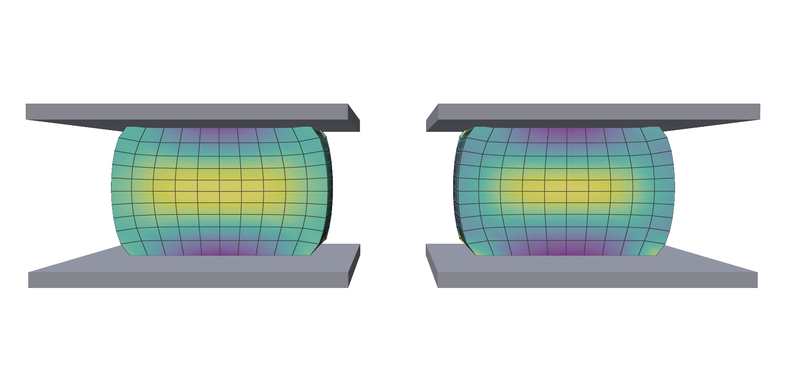

Solids¶
trusty.fem simulates deformable volumetric solids: a mesh, a material and a
density are all a body needs.
Capability: fem (included in every build).
Quick example¶
A soft beam clamped at one end, sagging under gravity:
mesh = trusty.make_beam_hex_mesh(size=(1.0, 0.1, 0.1), res=(20, 2, 2))
material = trusty.StableNeoHookean(youngs_modulus=1e6, poisson_ratio=0.3)
world = trusty.World(backend=backend, timestep=1.0 / 60.0)
beam = trusty.fem.add_hex_solid(world, mesh, material, density=1000.0, order=order)
trusty.fem.pin_face(world, beam, axis=0, coord=0.0) # clamp the x = 0 end
Each world.step() advances one timestep, and
trusty.fem.read_positions(world, beam) returns the deformed nodes as an
(N, 3) NumPy array.

add_hex_solid (or add_tet_solid for tet meshes) adds the body and returns
its id, which every other trusty.fem function takes.
| Argument | Meaning |
|---|---|
mesh |
a HexMesh or TetMesh; see Mesh types |
material |
a material model and its parameters; see Materials |
density |
kg/m³ |
order |
ElementOrder.Linear (default) or a quadratic order; see Element order |
The clamp comes from pin_face. Pins, moving targets and loads are covered
under Boundary conditions.
Full script: uv run examples/cantilever_beam.py
"""Cantilevered hex beam with Stable Neo-Hookean elasticity and gravity.
Steps the simulator and, unless
``--no-viewer`` is passed, shows the deforming beam in polyscope.
Usage:
uv run examples/cantilever_beam.py # live polyscope
uv run examples/cantilever_beam.py --no-viewer # write PNG sequence
uv run examples/cantilever_beam.py --steps 240 # run longer
uv run examples/cantilever_beam.py --order q2 # quadratic (Q2) elements
Install polyscope with ``pip install trusty-sim[viewer]`` (or directly
``pip install polyscope``).
"""
from __future__ import annotations
import argparse
from pathlib import Path
import numpy as np
import trusty
from utils import init_polyscope
ORDER = trusty.fem.ElementOrder
# CLI order name -> hex element order (Q1/Q2 Lagrange/Q2 serendipity).
HEX_ORDERS = {
"linear": ORDER.Linear,
"q2": ORDER.Quadratic,
"q2s": ORDER.QuadraticSerendipity,
}
def build_world(backend: str = "auto", order=ORDER.Linear):
mesh = trusty.make_beam_hex_mesh(size=(1.0, 0.1, 0.1), res=(20, 2, 2))
material = trusty.StableNeoHookean(youngs_modulus=1e6, poisson_ratio=0.3)
world = trusty.World(backend=backend, timestep=1.0 / 60.0)
beam = trusty.fem.add_hex_solid(world, mesh, material, density=1000.0, order=order)
trusty.fem.pin_face(world, beam, axis=0, coord=0.0) # clamp the x = 0 end
return world, beam
def _register_visuals(ps, world, beam, order):
# Linear elements render as a hex volume mesh; quadratic elements render
# via the linear sub-triangle tessellation of their curved surface.
if order == ORDER.Linear:
mesh = trusty.fem.read_mesh(world, beam)
ps_mesh = ps.register_volume_mesh(
"beam", np.asarray(mesh.vertices).copy(), hexes=np.asarray(mesh.hexes))
ps_mesh.set_edge_width(1.0)
read = lambda: np.asarray(trusty.fem.read_mesh(world, beam).vertices)
else:
V = np.asarray(trusty.fem.read_positions(world, beam)).copy()
F = np.asarray(trusty.fem.read_surface_triangles(world, beam))
ps_mesh = ps.register_surface_mesh("beam", V, F)
read = lambda: np.asarray(trusty.fem.read_positions(world, beam))
return ps_mesh, read
def run_polyscope(world, beam, steps: int, order):
ps = init_polyscope(headless=False)
ps_mesh, read_verts = _register_visuals(ps, world, beam, order)
state = {"i": 0, "playing": True}
def callback():
import polyscope.imgui as psim
_, state["playing"] = psim.Checkbox("play", state["playing"])
psim.SameLine()
if psim.Button("step") or state["playing"]:
if state["i"] < steps:
world.step()
state["i"] += 1
ps_mesh.update_vertex_positions(read_verts())
psim.Text(f"step {state['i']} / {steps}")
report = world.last_report()
psim.Text(
f"last solve: iters={report.iterations} "
f"residual={report.final_residual:.3e} "
f"{'converged' if report.converged else 'DIVERGED'}"
)
ps.set_user_callback(callback)
ps.show()
def run_screenshots(world, beam, steps: int, out_dir: Path, order):
ps = init_polyscope(headless=True)
out_dir.mkdir(parents=True, exist_ok=True)
ps_mesh, read_verts = _register_visuals(ps, world, beam, order)
ps.reset_camera_to_home_view()
def snapshot(idx: int):
ps.screenshot(str(out_dir / f"beam_{idx:04d}.png"), transparent_bg=False)
snapshot(0)
for i in range(1, steps + 1):
world.step()
ps_mesh.update_vertex_positions(read_verts())
snapshot(i)
report = world.last_report()
print(f"Wrote {steps + 1} screenshots to {out_dir}/")
print(f"Last solve: iters={report.iterations} "
f"residual={report.final_residual:.3e} "
f"{'converged' if report.converged else 'DIVERGED'}")
def main():
parser = argparse.ArgumentParser(description=__doc__.split("\n")[0])
parser.add_argument("--backend",
choices=["auto", "cpu", "cuda", "accelerate"], default="auto")
parser.add_argument("--order", choices=list(HEX_ORDERS), default="linear",
help="element order: q1 linear (default), q2 Lagrange, q2s serendipity")
parser.add_argument("--steps", type=int, default=120,
help="total simulation steps (default: 120 = 2 s at 1/60)")
parser.add_argument("--no-viewer", action="store_true",
help="headless: write PNG screenshots instead of showing polyscope")
parser.add_argument("--out", type=Path, default=Path("out"),
help="output directory for --no-viewer mode")
args = parser.parse_args()
order = HEX_ORDERS[args.order]
world, beam = build_world(backend=args.backend, order=order)
if args.no_viewer:
run_screenshots(world, beam, args.steps, args.out, order)
else:
run_polyscope(world, beam, args.steps, order)
if __name__ == "__main__":
main()
The world¶
trusty.World takes its settings as keyword arguments, all optional. They
are fixed for the world's life, and apply to every body in it:
| Argument | Meaning |
|---|---|
backend |
"auto" (default): the fastest backend every body type in the world supports, accelerate then cuda then cpu. Or "cpu", "accelerate", "cuda". |
timestep |
seconds per world.step() (default 1/60) |
gravity |
(x, y, z), m/s² (default (0, 0, -9.81)) |
time_stepping |
how each step is solved; see below |
newton |
a trusty.NewtonConfig(max_iters=..., tolerance=...) for the solver (default 20 iterations) |
time_stepping |
Each step |
|---|---|
"backward_euler" (default) |
moves the bodies forward in time, damping motion slightly |
"bdf2" |
the same, second order: less damping, so swinging and bouncing last longer |
"quasi_static" |
moves forward, then drops every velocity: bodies head for rest without swinging |
"static" |
finds the equilibrium under the current loads, with no inertia |
trusty.TimeStepping.BDF2 and the other enum values work too. Contact is
turned on separately; see Contact.
Materials¶
The material is one line. Build a different model to change how the solid responds:
Every model takes Young's modulus (Pa) and Poisson's ratio.
| Model | Behaviour |
|---|---|
StableNeoHookean |
Neo-Hookean that stays robust under large compression and inversion. A good default. |
NeohookeanBW |
The classical (Bonet & Wood) Neo-Hookean. |
Corotational |
Linear elasticity in a rotating frame: cheap, accurate at small strain, stiffer when stretched far. |
ARAP |
As-rigid-as-possible: resists shape change only and does not preserve volume. |
StableFung |
StableNeoHookean that stiffens exponentially with stretch, like soft tissue. Extra parameters mu1 (Pa) and gamma. |
QuadraticVolume |
Resists volume change only, with no shear stiffness. |
Five columns with the same stiffness, hung from their tops, stretch by
different amounts under their own weight. From left to right:
StableNeoHookean, NeohookeanBW, Corotational, ARAP, StableFung.

Full script: uv run examples/fem/hanging_materials.py
"""One hanging column per material model, stretching under its own weight.
Five soft columns (E = 10 kPa, nu = 0.45) share a mesh and density and hang
from their top faces. At these large strains the models part ways:
``StableFung`` stiffens as it stretches and stays shortest, ``Corotational``
is next, and the neo-Hookean family (``StableNeoHookean``, ``NeohookeanBW``)
and ``ARAP`` stretch furthest. A timestep of 1 s with the velocity zeroed after
every step moves each column straight to its hanging equilibrium, so
``--steps 10`` is already settled.
Usage:
uv run examples/fem/hanging_materials.py # live polyscope
uv run examples/fem/hanging_materials.py --no-viewer # print lengths
"""
from __future__ import annotations
import argparse
import sys
from pathlib import Path
import numpy as np
import trusty
sys.path.insert(0, str(Path(__file__).resolve().parent.parent))
from utils import init_polyscope # noqa: E402
E, NU = 1e4, 0.45 # soft, so the columns stretch visibly
LENGTH = 1.0 # rest length (m); the columns hang from z = LENGTH
SPACING = 0.25 # x offset between columns (m)
COLORS = [(0.94, 0.33, 0.31), (0.98, 0.70, 0.30), (0.35, 0.75, 0.70),
(0.45, 0.60, 0.90), (0.70, 0.50, 0.85)]
def make_materials():
return {
"StableNeoHookean": trusty.StableNeoHookean(youngs_modulus=E, poisson_ratio=NU),
"NeohookeanBW": trusty.NeohookeanBW(youngs_modulus=E, poisson_ratio=NU),
"Corotational": trusty.Corotational(youngs_modulus=E, poisson_ratio=NU),
"ARAP": trusty.ARAP(youngs_modulus=E, poisson_ratio=NU),
"StableFung": trusty.StableFung(youngs_modulus=E, poisson_ratio=NU,
mu1=2e3, gamma=4.0),
}
def build_world(backend: str = "auto"):
world = trusty.World(backend=backend,
timestep=1.0, # large steps with no carried-over
time_stepping="quasi_static") # velocity: each one heads for equilibrium
columns = {}
for k, (name, material) in enumerate(make_materials().items()):
mesh = trusty.make_beam_hex_mesh(size=(0.1, 0.1, LENGTH), res=(4, 4, 32))
mesh = trusty.transform_mesh(mesh, t=(SPACING * k, 0.0, 0.0))
body = trusty.fem.add_hex_solid(world, mesh, material, density=1000.0)
trusty.fem.pin_face(world, body, axis=2, coord=LENGTH) # hang from the top
columns[name] = body
return world, columns
def hanging_length(world, body) -> float:
z = np.asarray(trusty.fem.read_positions(world, body))[:, 2]
return float(LENGTH - z.min())
def run_viewer(world, columns, steps: int):
ps = init_polyscope(headless=False)
meshes = {}
for k, (name, body) in enumerate(columns.items()):
m = ps.register_surface_mesh(name, trusty.fem.read_positions(world, body),
trusty.fem.read_surface_triangles(world, body))
m.set_color(COLORS[k])
meshes[name] = (m, body)
ps.reset_camera_to_home_view()
state = {"i": 0, "playing": False}
def callback():
import polyscope.imgui as psim
_, state["playing"] = psim.Checkbox("play", state["playing"])
psim.SameLine()
if (psim.Button("step") or state["playing"]) and state["i"] < steps:
world.step()
state["i"] += 1
for m, body in meshes.values():
m.update_vertex_positions(trusty.fem.read_positions(world, body))
psim.Text(f"step {state['i']} / {steps}")
for name, (_, body) in meshes.items():
psim.Text(f"{name:<17} {hanging_length(world, body):.3f} m")
ps.set_user_callback(callback)
ps.show()
def main():
ap = argparse.ArgumentParser(description=__doc__.split("\n")[0])
ap.add_argument("--steps", type=int, default=10)
ap.add_argument("--backend", default="auto", choices=["auto", "cpu", "accelerate", "cuda"])
ap.add_argument("--no-viewer", action="store_true",
help="headless: print each column's hanging length")
args = ap.parse_args()
world, columns = build_world(args.backend)
if args.no_viewer:
for _ in range(args.steps):
world.step()
print(f"hanging length after {args.steps} steps (rest length {LENGTH} m)")
for name, body in columns.items():
print(f" {name:<17} {hanging_length(world, body):.3f} m")
return
run_viewer(world, columns, args.steps)
if __name__ == "__main__":
main()
Graded materials¶
A material can vary across a body. Instead of youngs_modulus and
poisson_ratio, pass a grid of parameters laid over the body's rest space:
LameParamsGrid for every model except StableFung, which takes a
FungParamsGrid. Here one beam is stiff everywhere except a soft band in the
middle:
E = youngs_along_beam() # one value per cell along x
pairs = [trusty.LameParams.from_young_poisson(e, NU) for e in E]
grid = trusty.LameParamsGrid(
origin=(0.0, 0.0, 0.0), # the beam's rest-space corner
spacing=(LENGTH / VOXELS, 1.0, 1.0), # VOXELS cells along x, 1 across
interpolation=trusty.GridInterpolation.Nearest,
mu=np.array([p.mu for p in pairs]).reshape(VOXELS, 1, 1),
lam=np.array([p.lam for p in pairs]).reshape(VOXELS, 1, 1),
)
material = trusty.StableNeoHookean(field=grid)
Each element takes the parameters of the grid cell under it: Nearest gives
crisp steps, and Linear (the default) blends between cells. Points outside
the grid take the nearest edge cell, so make the grid cover the whole body.
Under gravity the stiff halves stay straight and the beam folds at the soft
band (coloured by Young's modulus):

Full script: uv run examples/fem/graded_beam.py
"""One beam whose stiffness varies along its length: a soft band as a hinge.
A cantilever is stiff (E = 10 MPa) everywhere except a soft band (E = 50 kPa)
in the middle, authored as a ``LameParamsGrid`` over the beam's rest space
rather than as two bodies. Under gravity the stiff halves stay straight and the
beam folds at the band. The viewer colours each element by the Young's modulus
it was given. ``graded_material.py`` compares several grids side by side,
including what happens when the grid does not cover the body.
Usage:
uv run examples/fem/graded_beam.py # live polyscope
uv run examples/fem/graded_beam.py --no-viewer # print the sag
"""
from __future__ import annotations
import argparse
import sys
from pathlib import Path
import numpy as np
import trusty
sys.path.insert(0, str(Path(__file__).resolve().parent.parent))
from utils import init_polyscope # noqa: E402
LENGTH = 1.0
NU = 0.3
VOXELS = 20 # grid cells along the beam
def youngs_along_beam():
"""Young's modulus per grid cell: stiff, with a soft band in the middle."""
E = np.full(VOXELS, 1e7)
E[8:12] = 5e4
return E
def graded_material():
E = youngs_along_beam() # one value per cell along x
pairs = [trusty.LameParams.from_young_poisson(e, NU) for e in E]
grid = trusty.LameParamsGrid(
origin=(0.0, 0.0, 0.0), # the beam's rest-space corner
spacing=(LENGTH / VOXELS, 1.0, 1.0), # VOXELS cells along x, 1 across
interpolation=trusty.GridInterpolation.Nearest,
mu=np.array([p.mu for p in pairs]).reshape(VOXELS, 1, 1),
lam=np.array([p.lam for p in pairs]).reshape(VOXELS, 1, 1),
)
material = trusty.StableNeoHookean(field=grid)
return material
def build_world(backend: str = "auto"):
world = trusty.World(backend=backend,
time_stepping="static", # solve equilibrium each step
newton=trusty.NewtonConfig(max_iters=60))
mesh = trusty.make_beam_hex_mesh(size=(LENGTH, 0.1, 0.1), res=(40, 4, 4))
beam = trusty.fem.add_hex_solid(world, mesh, graded_material(), density=1000.0)
trusty.fem.pin_face(world, beam, axis=0, coord=0.0)
return world, beam, mesh
def element_youngs(mesh):
"""The modulus each hex runs: the grid cell (nearest) under its centre."""
centres_x = np.asarray(mesh.vertices)[np.asarray(mesh.hexes), 0].mean(axis=1)
cell = np.clip((centres_x / (LENGTH / VOXELS)).astype(int), 0, VOXELS - 1)
return youngs_along_beam()[cell]
def tip_sag(world, beam) -> float:
return float(-np.asarray(trusty.fem.read_positions(world, beam))[:, 2].min())
def run_viewer(world, beam, mesh, steps: int):
ps = init_polyscope(headless=False)
m = ps.register_volume_mesh("beam", trusty.fem.read_positions(world, beam),
hexes=np.asarray(mesh.hexes))
m.set_edge_width(1.0)
m.add_scalar_quantity("log10 Young's modulus", np.log10(element_youngs(mesh)),
defined_on="cells", cmap="viridis", enabled=True)
ps.reset_camera_to_home_view()
state = {"i": 0, "playing": False}
def callback():
import polyscope.imgui as psim
_, state["playing"] = psim.Checkbox("play", state["playing"])
psim.SameLine()
if (psim.Button("step") or state["playing"]) and state["i"] < steps:
world.step()
state["i"] += 1
m.update_vertex_positions(trusty.fem.read_positions(world, beam))
psim.Text(f"step {state['i']} / {steps} tip sag {tip_sag(world, beam):.3f} m")
ps.set_user_callback(callback)
ps.show()
def main():
ap = argparse.ArgumentParser(description=__doc__.split("\n")[0])
ap.add_argument("--steps", type=int, default=5)
ap.add_argument("--backend", default="auto", choices=["auto", "cpu", "accelerate", "cuda"])
ap.add_argument("--no-viewer", action="store_true", help="headless: print the sag")
args = ap.parse_args()
world, beam, mesh = build_world(args.backend)
if args.no_viewer:
for _ in range(args.steps):
world.step()
report = world.last_report()
print(f"tip sag after {args.steps} steps: {tip_sag(world, beam):.3f} m "
f"({'converged' if report.converged else 'NOT converged'})")
return
run_viewer(world, beam, mesh, args.steps)
if __name__ == "__main__":
main()
uv run examples/fem/graded_material.py goes further: it compares ramps
running either way along the beam, and shows what goes wrong when the grid is
too short.
Mesh types¶
Solids are built on hexahedral (HexMesh, 8-node bricks) or
tetrahedral (TetMesh, 4-node tets) meshes.
| Hex | Tet | |
|---|---|---|
| Structured beam | make_beam_hex_mesh(size, res) |
make_beam_tet_mesh(size, res) |
| From NumPy arrays | make_hex_mesh(vertices, hexes) |
make_tet_mesh(vertices, tets) |
| From a file | read_tet_msh(path) (Gmsh 2.2) |
|
| Add to a world | fem.add_hex_solid |
fem.add_tet_solid |
Hexes are efficient for box-like shapes; tets fit any shape. To simulate your
own geometry, tetrahedralize it with a tool such as
fTetWild,
TetGen or
Gmsh, then load it from a .msh file or pass its arrays
to make_tet_mesh. transform_mesh(mesh, A, t) places a mesh before you add
it.
# Structured beams, built in: (Lx, Ly, Lz) and elements per axis.
hex_mesh = trusty.make_beam_hex_mesh(size=(1.0, 0.1, 0.1), res=(20, 2, 2))
tet_mesh = trusty.make_beam_tet_mesh(size=(1.0, 0.1, 0.1), res=(20, 2, 2))
# Your own tet mesh, from a Gmsh .msh file (format 2.2) ...
loaded = trusty.read_tet_msh(str(mesh_path))
# ... or from NumPy arrays, e.g. produced by TetGen, fTetWild or meshio.
loaded = trusty.make_tet_mesh(loaded.vertices, loaded.tets)
# Place each mesh before adding it: rotate with A, translate with t.
tet_mesh = trusty.transform_mesh(tet_mesh, t=(0.0, 0.0, -0.3))
loaded = trusty.transform_mesh(loaded, t=(1.3, 0.05, -0.1))
The sample ball is examples/data/ball.msh. Try your own
mesh with uv run examples/fem/mesh_types.py --mesh my_mesh.msh.
Full script: uv run examples/fem/mesh_types.py
"""Hex and tet meshes: built-in beams, and a tet mesh loaded from a file.
Builds one world with a structured hex beam, a structured tet beam and a tet
ball read from ``data/ball.msh`` (Gmsh format 2.2), the way you would load your
own tetrahedralized geometry. Nothing is pinned, so stepping
lets all three fall under gravity.
Usage:
uv run examples/fem/mesh_types.py # live polyscope
uv run examples/fem/mesh_types.py --no-viewer # print mesh sizes
uv run examples/fem/mesh_types.py --mesh my.msh # your own tet mesh
"""
from __future__ import annotations
import argparse
import sys
from pathlib import Path
import numpy as np
import trusty
sys.path.insert(0, str(Path(__file__).resolve().parent.parent))
from utils import init_polyscope # noqa: E402
DATA = Path(__file__).resolve().parent.parent / "data"
COLORS = {"hex beam": (0.94, 0.33, 0.31), "tet beam": (0.78, 0.79, 0.84),
"loaded mesh": (0.35, 0.75, 0.70)}
def build_world(mesh_path: Path = DATA / "ball.msh", backend: str = "auto"):
# Structured beams, built in: (Lx, Ly, Lz) and elements per axis.
hex_mesh = trusty.make_beam_hex_mesh(size=(1.0, 0.1, 0.1), res=(20, 2, 2))
tet_mesh = trusty.make_beam_tet_mesh(size=(1.0, 0.1, 0.1), res=(20, 2, 2))
# Your own tet mesh, from a Gmsh .msh file (format 2.2) ...
loaded = trusty.read_tet_msh(str(mesh_path))
# ... or from NumPy arrays, e.g. produced by TetGen, fTetWild or meshio.
loaded = trusty.make_tet_mesh(loaded.vertices, loaded.tets)
# Place each mesh before adding it: rotate with A, translate with t.
tet_mesh = trusty.transform_mesh(tet_mesh, t=(0.0, 0.0, -0.3))
loaded = trusty.transform_mesh(loaded, t=(1.3, 0.05, -0.1))
world = trusty.World(backend=backend)
material = trusty.StableNeoHookean(youngs_modulus=1e6, poisson_ratio=0.3)
bodies = {
"hex beam": trusty.fem.add_hex_solid(world, hex_mesh, material, density=1000.0),
"tet beam": trusty.fem.add_tet_solid(world, tet_mesh, material, density=1000.0),
"loaded mesh": trusty.fem.add_tet_solid(world, loaded, material, density=1000.0),
}
return world, bodies, {"hex beam": hex_mesh, "tet beam": tet_mesh,
"loaded mesh": loaded}
def run_viewer(world, bodies, meshes, steps: int):
ps = init_polyscope(headless=False)
shown = {}
for name, body in bodies.items():
mesh = meshes[name]
cells = {"hexes": np.asarray(mesh.hexes)} if hasattr(mesh, "hexes") \
else {"tets": np.asarray(mesh.tets)}
m = ps.register_volume_mesh(name, trusty.fem.read_positions(world, body), **cells)
m.set_color(COLORS[name])
m.set_edge_width(1.0)
shown[name] = (m, body)
ps.reset_camera_to_home_view()
state = {"i": 0, "playing": False}
def callback():
import polyscope.imgui as psim
_, state["playing"] = psim.Checkbox("play (fall under gravity)", state["playing"])
psim.SameLine()
if (psim.Button("step") or state["playing"]) and state["i"] < steps:
world.step()
state["i"] += 1
for m, body in shown.values():
m.update_vertex_positions(trusty.fem.read_positions(world, body))
psim.Text(f"step {state['i']} / {steps}")
ps.set_user_callback(callback)
ps.show()
def main():
ap = argparse.ArgumentParser(description=__doc__.split("\n")[0])
ap.add_argument("--mesh", type=Path, default=DATA / "ball.msh",
help="tet mesh to load (Gmsh .msh, format 2.2)")
ap.add_argument("--steps", type=int, default=60)
ap.add_argument("--backend", default="auto", choices=["auto", "cpu", "accelerate", "cuda"])
ap.add_argument("--no-viewer", action="store_true",
help="headless: print each mesh's size")
args = ap.parse_args()
world, bodies, meshes = build_world(args.mesh, args.backend)
if args.no_viewer:
for name, mesh in meshes.items():
print(f"{name:<12} {mesh.num_nodes:5d} nodes {mesh.num_elems:5d} elements")
return
run_viewer(world, bodies, meshes, args.steps)
if __name__ == "__main__":
main()

Element order¶
Both mesh types support linear and quadratic elements, set with order:
ElementOrder |
Hex | Tet |
|---|---|---|
Linear (default) |
Q1, 8 nodes | P1, 4 nodes |
Quadratic |
Q2, 27 nodes | P2, 10 nodes |
QuadraticSerendipity |
Q2 serendipity, 20 nodes | — |
if kind == "hex":
return trusty.fem.add_hex_solid(world, mesh, material, density, order=order)
return trusty.fem.add_tet_solid(world, mesh, material, density, order=order)
Pass the ordinary linear mesh: quadratic orders add the extra nodes themselves. Linear elements are cheaper but lock in bending on coarse meshes, which makes the body too stiff. Quadratic elements bend correctly with far fewer elements. Below are five coarse beams (6 × 1 × 1 elements). From front to back: hex Q1, tet P1, tet P2, hex Q2 serendipity, hex Q2. The linear tet beam locks worst and barely sags; all three quadratic beams agree.

Full script: uv run examples/bending_locking.py
"""Higher-order (P2/Q2) FEM demo: quadratic elements resist bending locking.
Builds one world with a cantilever beam per element family, laid out side by
side, all pinned at x=0 and sagging under gravity. Linear Q1/P1 elements lock
(under-deflect) on a coarse mesh; the quadratic P2 tet and Q2 hexes bend much
more freely. Quadratic bodies are rendered via the same linear sub-triangle
tessellation of their curved surface that contact uses
(`fem.read_surface_triangles`).
Usage:
uv run examples/bending_locking.py # live polyscope
uv run examples/bending_locking.py --no-viewer # print comparison
uv run examples/bending_locking.py --res 8 1 1 # finer corner mesh
"""
from __future__ import annotations
import argparse
import numpy as np
import trusty
from utils import init_polyscope
ORDER = trusty.fem.ElementOrder
# label -> (mesh kind, element order, color)
FAMILIES = {
"hex_q1": ("hex", ORDER.Linear, (0.6, 0.6, 0.6)),
"tet_p1": ("tet", ORDER.Linear, (0.4, 0.5, 0.7)),
"tet_p2": ("tet", ORDER.Quadratic, (0.9, 0.6, 0.2)),
"hex_q2_serendipity": ("hex", ORDER.QuadraticSerendipity, (0.3, 0.7, 0.4)),
"hex_q2": ("hex", ORDER.Quadratic, (0.8, 0.3, 0.3)),
}
def add_body(world, kind, order, mesh, material, density):
if kind == "hex":
return trusty.fem.add_hex_solid(world, mesh, material, density, order=order)
return trusty.fem.add_tet_solid(world, mesh, material, density, order=order)
def build_world(size, res, backend="auto"):
material = trusty.StableNeoHookean(youngs_modulus=1e6, poisson_ratio=0.3)
spacing = 1.5 * size[1]
world = trusty.World(backend=backend,
timestep=1.0 / 30.0,
time_stepping="quasi_static",
newton=trusty.NewtonConfig(tolerance=1e-5))
bodies = {}
for k, (family, (kind, order, _)) in enumerate(FAMILIES.items()):
mesh = (trusty.make_beam_hex_mesh(size=size, res=res) if kind == "hex"
else trusty.make_beam_tet_mesh(size=size, res=res))
# Shift in +y only, so the x=0 pin still lands on the fixed face.
mesh = trusty.transform_mesh(mesh, t=(0.0, k * spacing, 0.0))
body = add_body(world, kind, order, mesh, material, 1000.0)
trusty.fem.pin_face(world, body, axis=0, coord=0.0)
bodies[family] = body
return world, bodies
def tip_deflection(world, body):
verts = np.asarray(trusty.fem.read_positions(world, body))
tip = verts[:, 0] > verts[:, 0].max() - 1e-3
return float(-verts[tip, 2].max()) # downward deflection (+ = down)
def main():
parser = argparse.ArgumentParser(description=__doc__.split("\n")[0])
parser.add_argument("--res", type=int, nargs=3, default=[6, 1, 1])
parser.add_argument("--steps", type=int, default=200)
parser.add_argument("--backend", choices=["auto", "cpu", "accelerate"], default="auto")
parser.add_argument("--no-viewer", action="store_true",
help="headless: print the tip-deflection comparison instead of polyscope")
args = parser.parse_args()
size = (1.0, 0.1, 0.1)
world, bodies = build_world(size, tuple(args.res), args.backend)
if args.no_viewer:
for _ in range(args.steps):
world.step()
print(f"Cantilever {size} at corner res {tuple(args.res)}, {args.steps} steps")
print(f"{'family':<20} {'nodes':>7} {'tip deflection (m)':>20}")
for family, body in bodies.items():
n = np.asarray(trusty.fem.read_positions(world, body)).shape[0]
print(f"{family:<20} {n:>7} {tip_deflection(world, body):>20.5e}")
return
run_viewer(world, bodies, args.steps)
def run_viewer(world, bodies, steps):
ps = init_polyscope(headless=False)
meshes = {}
for family, body in bodies.items():
V = np.asarray(trusty.fem.read_positions(world, body)).copy()
F = np.asarray(trusty.fem.read_surface_triangles(world, body))
m = ps.register_surface_mesh(family, V, F)
m.set_color(FAMILIES[family][2])
meshes[family] = (m, body)
ps.reset_camera_to_home_view()
state = {"i": 0, "playing": False}
def callback():
import polyscope.imgui as psim
_, state["playing"] = psim.Checkbox("play", state["playing"])
psim.SameLine()
if (psim.Button("step") or state["playing"]) and state["i"] < steps:
world.step()
state["i"] += 1
for _family, (m, body) in meshes.items():
m.update_vertex_positions(np.asarray(trusty.fem.read_positions(world, body)))
psim.Text(f"step {state['i']} / {steps}")
report = world.last_report()
psim.Text(f"last solve: iters={report.iterations} "
f"residual={report.final_residual:.3e} "
f"{'converged' if report.converged else 'DIVERGED'}")
ps.set_user_callback(callback)
ps.show()
if __name__ == "__main__":
main()
A quadratic body runs on its consistent mass matrix by default;
consistent_mass=False lumps its mass onto the nodes instead. Linear bodies
always lump their mass.
Quadratic bodies have more nodes than their input mesh. read_positions
returns all of them, and read_surface_triangles returns a triangulation of
the curved surface, indexed into those positions, for rendering.
Visualizing stress¶
| Function | Returns |
|---|---|
read_positions(world, body) |
current node positions, (num_nodes, 3) |
read_surface_triangles(world, body) |
boundary triangles into read_positions, (F, 3) |
read_von_mises(world, body) |
von Mises stress in Pa, per node (or per element with nodal=False) |
read_strain_energy_density(world, body) |
strain energy density in J/m³, likewise |
Both stress readouts take nodal= (a smooth per-node field, or raw
per-element values) and unit_material= (evaluate with unit moduli, a
stiffness-independent strain measure):
vm, psi = trusty.fem.read_von_mises, trusty.fem.read_strain_energy_density
return {
FIELDS[0]: np.asarray(vm(world, body, nodal=True)),
FIELDS[1]: np.asarray(psi(world, body, nodal=True)),
FIELDS[2]: np.asarray(vm(world, body, nodal=True, unit_material=True)),
FIELDS[3]: np.asarray(psi(world, body, nodal=True, unit_material=True)),
}
The arrays are plain NumPy, so they go straight into polyscope as scalar quantities. Below, a soft block is squeezed 30% between two clamped plates and cut open at its mid-plane: von Mises on the left, strain energy density on the right. The clamped faces cannot spread, so the block bulges. Both fields are highest in the band through the middle and lowest under the centre of each plate, where the material is squeezed almost equally from every side. Von Mises ignores that equal squeezing (pressure) and strain energy includes it. Use von Mises for yielding and strain energy when pressure matters.

Full script: uv run examples/fem/visualize_stress.py
"""Von Mises vs strain energy density on a block squeezed between two plates.
A soft, nearly incompressible block (E = 500 kPa, nu = 0.45) is clamped at its
bottom face and its top face is pushed down 30% by a moving pin. The clamped
faces cannot spread sideways, so the block bulges at mid-height and the stress
varies through it: highest in the bulging middle band, lowest under the plate
centres, where the material is squeezed almost equally from every side. The
two readouts measure different things:
* **von Mises** is *deviatoric*: it discards the hydrostatic (pressure) part
of the stress. It is the measure for yielding and failure.
* **strain energy density** includes the volumetric term, so it also counts
how hard the material is being squeezed.
Both take `nodal=` (True: a smooth per-node field; False: raw per-element
values) and `unit_material=` (evaluate at mu = lam = 1, a stiffness-independent
strain measure, so soft and stiff regions are directly comparable).
Usage:
uv run examples/fem/visualize_stress.py # live polyscope
uv run examples/fem/visualize_stress.py --no-viewer # print ranges
uv run examples/fem/visualize_stress.py --squeeze 0.4
"""
from __future__ import annotations
import argparse
import sys
from pathlib import Path
import numpy as np
import trusty
sys.path.insert(0, str(Path(__file__).resolve().parent.parent))
from utils import init_polyscope # noqa: E402
SIZE = 0.2 # block edge (m)
RES = 10 # hexes per edge
E, NU = 5.0e5, 0.45 # soft and nearly incompressible
PLATE_STIFFNESS = 1e10 # Pa; stiff enough to act as a rigid plate
FIELDS = ("von Mises (Pa)", "strain energy (J/m^3)",
"von Mises (unit material)", "strain energy (unit material)")
def read_fields(world, body):
"""Every combination the two readouts offer, for one body."""
vm, psi = trusty.fem.read_von_mises, trusty.fem.read_strain_energy_density
return {
FIELDS[0]: np.asarray(vm(world, body, nodal=True)),
FIELDS[1]: np.asarray(psi(world, body, nodal=True)),
FIELDS[2]: np.asarray(vm(world, body, nodal=True, unit_material=True)),
FIELDS[3]: np.asarray(psi(world, body, nodal=True, unit_material=True)),
}
class Press:
"""The block and the moving top plate that squeezes it."""
def __init__(self, backend: str = "auto"):
self.world = trusty.World(backend=backend,
time_stepping="static", # solve equilibrium each step
gravity=(0.0, 0.0, 0.0), # the plates are the only load
newton=trusty.NewtonConfig(max_iters=60))
mesh = trusty.make_beam_hex_mesh(size=(SIZE, SIZE, SIZE), res=(RES, RES, RES))
self.mesh = mesh
material = trusty.StableNeoHookean(youngs_modulus=E, poisson_ratio=NU)
self.body = trusty.fem.add_hex_solid(self.world, mesh, material, density=1000.0)
# Bottom face clamped; top face held by a pin whose targets move down.
trusty.fem.pin_face(self.world, self.body, axis=2, coord=0.0)
rest = np.asarray(mesh.vertices)
self.top = np.flatnonzero(np.abs(rest[:, 2] - SIZE) < 1e-9)
self.top_rest = rest[self.top].copy()
self.pin = trusty.boundary_conditions.pin_to_target(
self.world, self.body, self.top.tolist(), self.top_rest, PLATE_STIFFNESS)
def squeeze_to(self, fraction: float):
"""Move the top plate down to `fraction` of the height and solve."""
targets = self.top_rest.copy()
targets[:, 2] -= fraction * SIZE
trusty.boundary_conditions.set_pin_targets(self.world, self.pin, targets)
self.world.step()
def squeeze(self, fraction: float, steps: int):
"""Reach `fraction` in `steps` equal increments."""
for k in range(1, steps + 1):
self.squeeze_to(fraction * k / steps)
def report(press):
width = max(len(f) for f in FIELDS)
x = np.asarray(trusty.fem.read_positions(press.world, press.body))
print(f"height {x[press.top, 2].mean():.3f} m (rest {SIZE} m), "
f"width {x[:, 0].max() - x[:, 0].min():.3f} m (rest {SIZE} m)")
for name, values in read_fields(press.world, press.body).items():
print(f" {name:<{width}} min={values.min():10.4g} max={values.max():10.4g}")
def run_viewer(press, fraction: float, steps: int):
ps = init_polyscope(headless=False)
m = ps.register_volume_mesh(
"block", trusty.fem.read_positions(press.world, press.body),
hexes=np.asarray(press.mesh.hexes))
m.set_edge_width(1.0)
def refresh():
m.update_vertex_positions(trusty.fem.read_positions(press.world, press.body))
for name, values in read_fields(press.world, press.body).items():
m.add_scalar_quantity(name, values, defined_on="vertices",
cmap="viridis", enabled=(name == FIELDS[0]))
state = {"i": 0, "playing": False}
refresh()
ps.reset_camera_to_home_view()
def callback():
import polyscope.imgui as psim
_, state["playing"] = psim.Checkbox("play (squeeze)", state["playing"])
psim.SameLine()
if (psim.Button("step") or state["playing"]) and state["i"] < steps:
state["i"] += 1
press.squeeze_to(fraction * state["i"] / steps)
refresh()
psim.Text(f"squeeze {100 * fraction * state['i'] / steps:.0f}% "
f"(step {state['i']} / {steps})")
psim.Text("Switch fields under the block's Scalar Quantities.")
ps.set_user_callback(callback)
ps.show()
def main():
ap = argparse.ArgumentParser(description=__doc__.split("\n")[0])
ap.add_argument("--squeeze", type=float, default=0.3,
help="fraction of the height the top plate moves down")
ap.add_argument("--steps", type=int, default=10,
help="load increments to reach the full squeeze")
ap.add_argument("--backend", default="auto", choices=["auto", "cpu", "accelerate", "cuda"])
ap.add_argument("--no-viewer", action="store_true",
help="headless: squeeze fully, then print the field ranges")
args = ap.parse_args()
press = Press(args.backend)
if args.no_viewer:
press.squeeze(args.squeeze, args.steps)
report(press)
return
run_viewer(press, args.squeeze, args.steps)
if __name__ == "__main__":
main()
Reference¶
Every function and argument: trusty.fem reference.